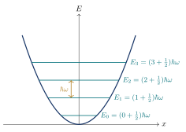

Download this chapter (PDF) Full notes (PDF)
6 The Linear Harmonic Oscillator: Ladder-Operator Method¶
6.1 Hamiltonian and the Operators \(\hat a,\hat a^\dagger\)¶
Define the annihilation and creation operators
which invert to
Commutator. Starting from \([\hat x,\hat p]=i\hbar\),
Ladder-Operator Algebra
Study Note
Here \([\hat a^\dagger,\hat a]=-[\hat a,\hat a^\dagger]=-1\) was used in the line above to combine the first and last terms. The whole algebra of the oscillator follows from this single commutator.
6.2 The Hamiltonian in Terms of \(\hat a^\dagger\hat a\)¶
Oscillator Hamiltonian
Study Note
The cross terms \(\hat x\hat p\) and \(\hat p\hat x\) combine into \(\frac i{2\hbar}[\hat x,\hat p]=\frac i{2\hbar}(i\hbar)=-\frac12\), which is the origin of the \(\frac12\). The “zero-point” term \(\frac12\hbar\omega\) is a purely quantum effect coming from \([\hat x,\hat p]\neq0\).
6.3 Raising and Lowering the Energy¶
Compute the commutators with \(\hat{\mathcal H}=\hat a^\dagger\hat a+\frac12\):
Hence, using \(\hat{\mathcal H}\hat a=\hat a\hat{\mathcal H}-[\hat a,\hat{\mathcal H}]\),
Ladder Property
Intuition
\(\hat a\) takes an energy eigenstate to another eigenstate one quantum \(\hbar\omega\) lower; \(\hat a^\dagger\) takes it one quantum higher. Like climbing a ladder with equal rungs, one only needs the bottom rung and the rule for stepping up.
6.4 The Ground State and the Spectrum¶
Let \(|\epsilon_0\rangle\) be the lowest state, so that lowering cannot go further: \(\hat a|\epsilon_0\rangle=0\). Then \(\hat a^\dagger\hat a|\epsilon_0\rangle=0\), i.e. \(\big(\hat{\mathcal H}-\frac12\big)|\epsilon_0\rangle=0\), so
Applying the raising operator repeatedly gives \(\epsilon_1=\big(1+\frac12\big)\hbar\omega=\frac32\hbar\omega\), and so on.
Complete Solution (why a lowest state must exist)
For any eigenstate, \(\langle\epsilon|\hat a^\dagger\hat a|\epsilon\rangle=\|\hat a|\epsilon\rangle\|^2\ge0\), i.e. \(\epsilon-\frac12\ge0\), so \(\epsilon\ge\frac12\). If repeated lowering never terminated, \(\epsilon-1,\epsilon-2,\dots\) would eventually fall below \(\frac12\), a contradiction. So lowering must stop at a state with \(\hat a|\epsilon_0\rangle=0\), which fixes \(\epsilon_0=\frac12\); the allowed values are then \(\epsilon_0+n\) with \(n=0,1,2,\dots\) (no values in between, since one cannot stop lowering at any other \(\epsilon\)).
Energy Spectrum

Study Note (figure)
The levels are equally spaced by \(\hbar\omega\), with the lowest at \(\frac12\hbar\omega\), not \(0\). Each level \(E_n\) is non-degenerate, as Theorem 1 of Section 5 requires for a bound state in one dimension.
6.5 Normalization of the Ladder Action¶
Write \(\hat a|n\rangle=c_n|n-1\rangle\) (so \(\hat a^\dagger\) has the adjoint action \(\langle n|\hat a^\dagger=c_n^*\langle n-1|\)). Then
(taking the phase of \(|n-1\rangle\) so that \(c_n\) is real and positive).
Action of \(\hat a,\hat a^\dagger\) and the Number Operator
\(\hat N\equiv\hat a^\dagger\hat a\) is the number operator, \(\hat H=\hbar\omega\big(\hat N+\frac12\big)\) and \([\hat H,\hat N]=0\).
Verification (the raising coefficient)
\(\langle n+1|\hat a^\dagger|n\rangle=\langle n|\hat a|n+1\rangle^*=\sqrt{n+1}\), so \(\hat a^\dagger|n\rangle=\sqrt{n+1}|n+1\rangle\). Combining, \(\hat a^\dagger\hat a|n\rangle=\sqrt n\sqrt n|n\rangle=n|n\rangle\) .
Matrix representation¶
Complete Solution (the matrix the notebook starts)
In the basis \(|0\rangle,|1\rangle,|2\rangle,|3\rangle,\dots\) (rows \(n'\), columns \(n\)),
In the notebook’s table the first listed column is \(|1\rangle\) (the state \(|0\rangle\) is not shown), which is why the first row is \(0\) and the next entry is \(\sqrt2\): the table starts one step up the ladder. With \(|0\rangle\) included the first sub-diagonal entry is \(\langle1|\hat a^\dagger|0\rangle=1\).
6.6 Constructing All States from the Ground State¶
From \(\hat a^\dagger|0\rangle=|1\rangle\), \(\hat a^\dagger|1\rangle=\sqrt2\,|2\rangle\):
Number States from the Vacuum
6.7 Wavefunctions in the Position Basis¶
Ground state. Use \(\hat a|0\rangle=0\) and project onto \(\langle x|\), with \(\hat p\to-i\hbar\,d/dx\):
Separating variables, \(\dfrac{d\psi_0}{\psi_0}=-\dfrac{m\omega}\hbar x\,dx\), so
where \(N\) follows from \(\int|\psi_0|^2dx=N^2\sqrt{\pi\hbar/m\omega}=1\).
Excited states. Substituting \(\hat p\to-i\hbar\,d/dx\) in \(|n\rangle=\frac1{\sqrt{n!}}(\hat a^\dagger)^n|0\rangle\):
Oscillator Eigenfunctions
These are the Hermite functions: \(\psi_n\) is a polynomial of degree \(n\) (a Hermite polynomial) times the Gaussian \(e^{-m\omega x^2/2\hbar}\).
Complete Solution (first excited state)
Since \(\hbar\psi_0'=-m\omega x\,\psi_0\), we get \(\big(m\omega x-\hbar\frac d{dx}\big)\psi_0=2m\omega x\,\psi_0\), hence
which is odd, has one node at \(x=0\) (consistent with Theorem 2 of Section 5), and is normalized: \(\int|\psi_1|^2dx=\frac{2m\omega}\hbar N^2\int x^2e^{-m\omega x^2/\hbar}dx=\frac{2m\omega}\hbar N^2\cdot\frac{\hbar}{2m\omega}\sqrt{\frac{\pi\hbar}{m\omega}}=1\) .
6.8 Moments and the Uncertainty Product¶
In the state \(|n\rangle\), \(\langle\hat x\rangle=\sqrt{\frac\hbar{2m\omega}}\langle n|\hat a+\hat a^\dagger|n\rangle=0\) since \(\hat a,\hat a^\dagger\) change \(n\), and likewise \(\langle\hat p\rangle=0\). Hence \((\Delta p)^2=\langle\hat p^2\rangle\) and \((\Delta x)^2=\langle\hat x^2\rangle\). Squaring the definitions,
because \(\hat a^\dagger\hat a^\dagger\) and \(\hat a\hat a\) change \(n\) by \(\pm2\) and have zero diagonal elements, and \(\hat a\hat a^\dagger=\hat a^\dagger\hat a+1\). In the same way
Uncertainty in the Oscillator States
Verification (virial theorem)
\(\langle T\rangle=\dfrac{\langle\hat p^2\rangle}{2m}=\dfrac12\hbar\omega\big(n+\frac12\big)\) and \(\langle V\rangle=\dfrac12m\omega^2\langle\hat x^2\rangle=\dfrac12\hbar\omega\big(n+\frac12\big)\), so \(\langle T\rangle=\langle V\rangle=\frac12E_n\) and their sum is \(E_n\) .
Memory Rule
Ladder rules: \(\hat a|n\rangle=\sqrt n|n-1\rangle\) (the factor is \(\sqrt{\text{the larger index}}\) in both \(\hat a\) and \(\hat a^\dagger\) matrix elements), \(\hat a^\dagger|n\rangle=\sqrt{n+1}|n+1\rangle\), \(\hat N=\hat a^\dagger\hat a\), and \([\hat a,\hat a^\dagger]=1\).
Exam Tip
For any matrix element of \(\hat x^k\hat p^l\) between number states, replace \(\hat x,\hat p\) by \(\hat a,\hat a^\dagger\), expand, and keep only terms with equal numbers of \(\hat a\) and \(\hat a^\dagger\) (diagonal elements) or the right net difference (off-diagonal). Reorder with \(\hat a\hat a^\dagger=\hat a^\dagger\hat a+1\).